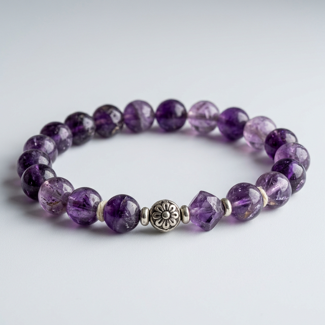
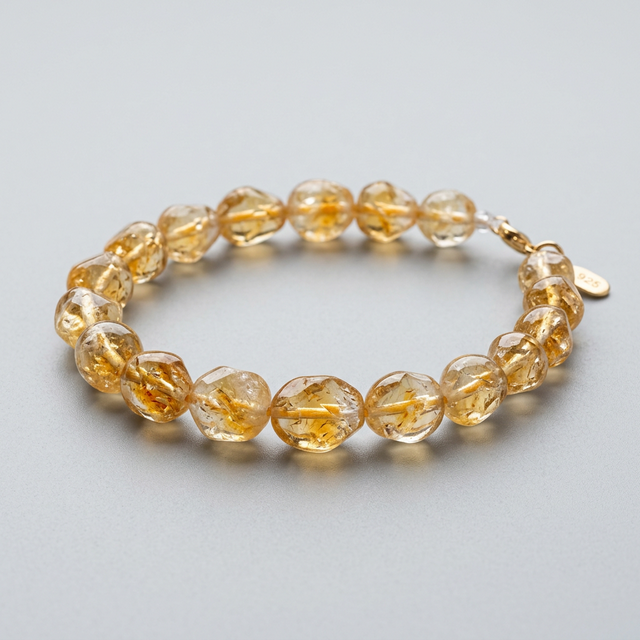
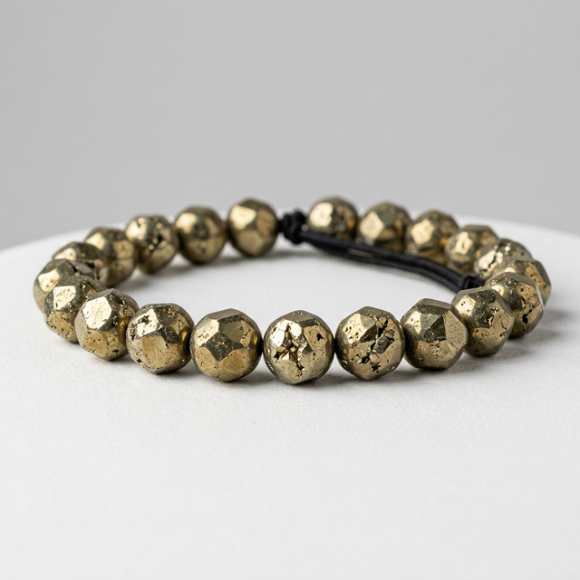
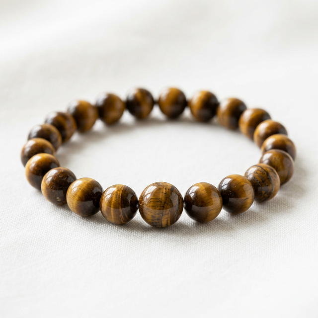
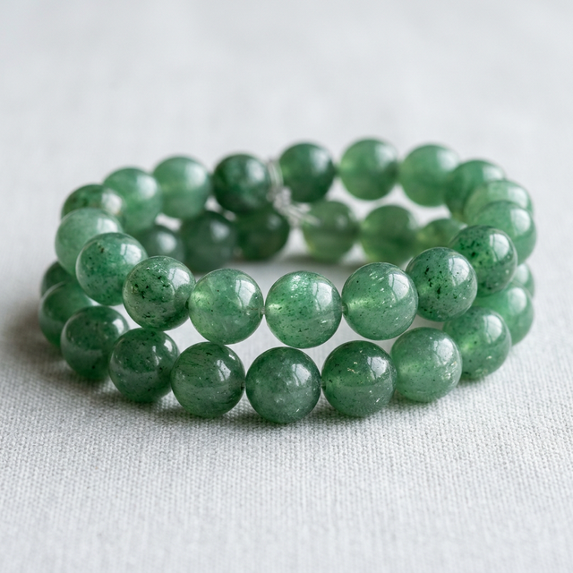
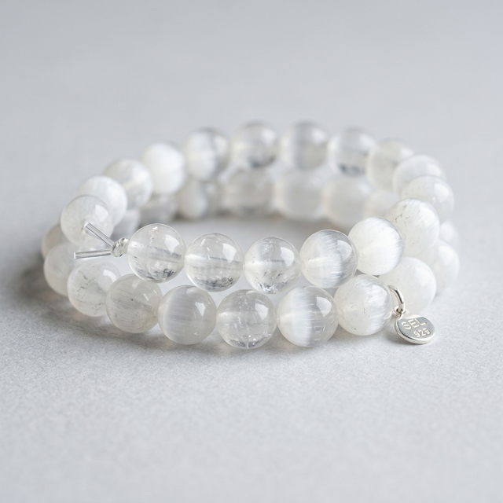
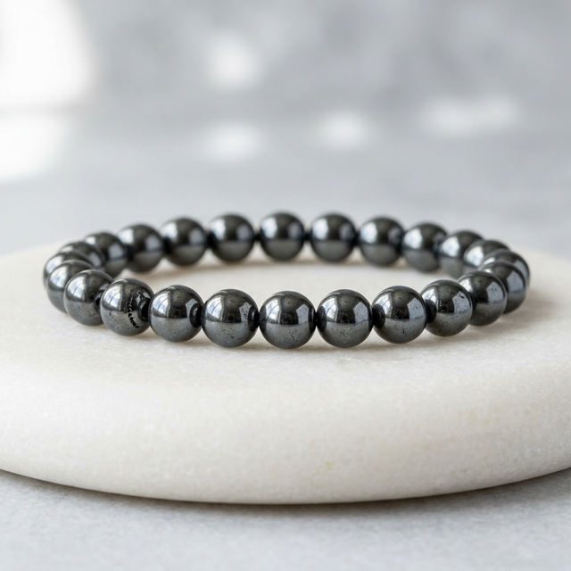
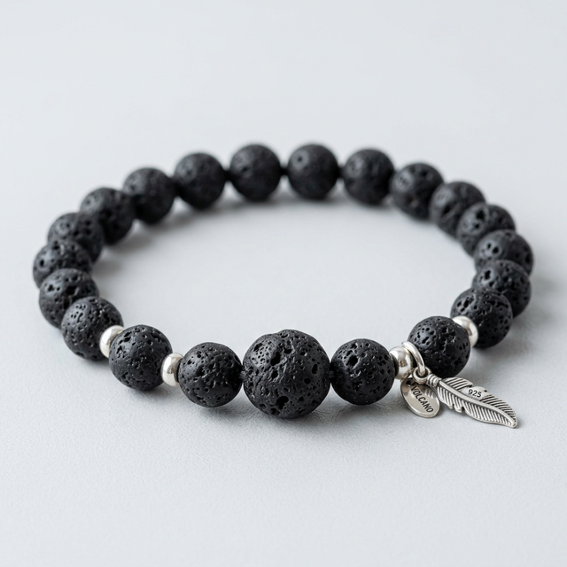

Remedy Store
Sacred Crystals Encyclopedia
Learn about the healing benefits, planetary links, and chakra balancing properties of sacred crystals.

Amethyst (Katela)
Crown & Third-Eye Chakra | Rahu & Saturn RemedyAmethyst, chemically known as a purple crystalline silicon dioxide quartz matrix, has been revered since 3000 BCE in ancient Egyptian, Greek, and Indian Vedic histories. In Vedic astrology, Amethyst (Katela) is regarded as a sub-stone (Uparatna) for Saturn (Shani) and is highly recommended to pacify the negative alignments of Rahu. Structurally, the purple hues of Amethyst arise from iron impurities irradiated by natural gamma rays inside rock pockets, establishing a high-frequency crystalline vibration.
Metaphysical Activation: To activate your Amethyst cluster or bracelet, submerge it in dry rock salt for 12 hours, then wash with cold spring water. Expose it to the full moon rays to charge its intuitive nodes. Meditate with it on your forehead to stimulate the crown center. It works as an energy filter, converting ambient worries into peaceful thoughts.
Vastu Placement Rules: Place an Amethyst geode in the North-East zone of your living room to promote clear thinking, study focus for children, and calm communication. For insomnia relief, place a small polished tumble stone under your pillow.
Chakra Focus: Crown & Third-Eye
Shop Amethyst Collection

Citrine (Sunela)
Solar Plexus Chakra | Jupiter (Guru) RemedyCitrine, traditionally known as Sunela, is the ultimate stone of financial manifestation, professional abundance, and intellectual expansion. Governed by the expansive planet Jupiter (Guru), Citrine aligns with the solar plexus chakra (Manipura), boosting metabolic heat and self-will. Its golden yellow frequencies carry solar energy directly into the user's aura, clearing blockages that cause lethargy and negative cash flow concerns.
Metaphysical Activation: Citrine does not hold negative energy and rarely requires cleansing. However, you can charge it by placing it next to a quartz cluster or exposing it to sweet morning sunlight for 15 minutes. Chant the Jupiter Guru Mantra (Om Brim Brihaspataye Namah) 108 times while holding the stone.
Vastu Placement Rules: Position a Citrine Wealth Tree or geode cluster in the South-East corner (Fire and Wealth Zone) of your workplace or home office. This placement attracts consistent retail sales, clears accumulated business debt, and stimulates career opportunities.
Chakra Focus: Solar Plexus
Shop Citrine Collection

Rose Quartz (Sphatik Pink)
Heart Chakra | Venus (Shukra) RemedyRose Quartz is the crystal of universal, unconditional love. Carrying Venus (Shukra) planetary frequencies, it activates the Heart Chakra (Anahata), soothing distress and restoring deep trust. Its pink crystal matrix works on the subtle layers of the energetic body, healing old emotional blockages and replacing them with feelings of self-acceptance and compassion.
Metaphysical Activation: Cleanse your Rose Quartz using fresh rosewater or smudge with sandalwood incense. Hold it close to your heart, take deep slow breaths, and program it with intentions of self-love and relationship harmony.
Vastu Placement Rules: To foster relationship peace, place a pair of Rose Quartz Mandarin Ducks or a raw crystal block in the South-West zone (Relationship Zone) of your bedroom. This placement dissolves daily disputes and promotes cooperative energies.
Chakra Focus: Heart (Anahata)
Shop Rose Quartz Collection

Pyrite (Fool's Gold)
Solar Plexus Chakra | Sun & Mars ShieldPyrite, an iron disulfide mineral with a brassy golden metallic luster, is a powerful shield against environmental stress, EMF radiation, and psychic drain. Known as a stone of action and willpower, Pyrite combines the fiery, courage-inducing frequencies of Mars with the vitalizing luck of the Sun. It encourages active leadership and clears creative blocks.
Metaphysical Activation: Never cleanse Pyrite with water, as its iron content will oxidize. Cleanse it instead with sage smudge or by placing it next to a hematite block. Charge under direct morning sunlight for 10 minutes.
Vastu Placement Rules: Place Pyrite on your business desk or reception counter to project confidence and attract wealthy clients. In homes, place a raw cluster in the South-East zone to stimulate prosperity.
Chakra Focus: Solar Plexus
Shop Pyrite Collection

Black Obsidian
Root/Base Chakra | Saturn (Shani) ShieldBlack Obsidian is a natural volcanic glass formed from rapid cooling lava. Astrologically linked with Saturn (Shani), it offers powerful grounding, absorption of negative vibrations, and protection against psychic drain. It acts as an energetic anchor, pulling unstable mental fields down into physical reality.
Metaphysical Activation: Wash with running water, then bury it in the earth for 24 hours to re-align its volcanic memory. Program it to absorb negative household stress.
Vastu Placement Rules: Place Black Obsidian near your main door entrance to absorb toxic intentions from visitors. It can also be placed in the South-West corner of a room to stabilize emotional mood swings.
Chakra Focus: Root (Muladhara)
Shop Obsidian Collection

Tiger Eye
Solar Plexus & Sacral Chakra | Ketu & Sun RemedyTiger Eye is a metamorphic quartz displaying a beautiful chatoyancy flash. Governed by Ketu and the Sun, it provides courage, mental clarity, and protection during career transitions. It stimulates the lower chakras, helping the user make practical decisions without fear.
Metaphysical Activation: Charge it by placing it on a copper plate under direct sunlight for 30 minutes. Chant the Ketu Mantra (Om Kem Ketave Namah) to activate its shielding properties.
Vastu Placement Rules: Place in the South or West zones of a home to bolster inner confidence, focus, and physical energy.
Chakra Focus: Solar Plexus & Sacral
Shop Tiger Eye Collection

Green Aventurine (Margaj)
Heart Chakra | Mercury (Budha) RemedyGreen Aventurine, traditionally referred to as Margaj, is widely known as the "Stone of Opportunity." Resonating with the green ray of the Heart Chakra (Anahata), it releases old mental habits and emotional patterns, paving the way for fresh optimism, motivation, and luck. Astrologically, it aligns with Mercury (Budha) to support clever business calculations and intellect.
Metaphysical Activation: Cleanse your Green Aventurine by burying it in raw soil for 12 hours or placing it next to green leaves. Charge it in the morning sun. Program it with intentions of prosperity and professional success.
Vastu Placement Rules: Place raw aventurine or a green bracelet in the East zone of your living room to support family networks, or in the North zone to boost career gains.
Chakra Focus: Heart (Anahata)
Shop Aventurine Collection

Selenite (Sphatik Clear)
Crown & Higher Crown Chakra | Moon (Chandra) RemedySelenite is a high-vibrational form of gypsum crystal, named after Selene, the Greek goddess of the Moon. Revered as a crystal of pure light, it clears congestion from the aura and naturally charges other crystal assets. Governed by the Moon (Chandra), it acts as a mental buffer, dissolving erratic emotions and restoring profound sleep.
Metaphysical Activation: Never cleanse Selenite with water as it is water-soluble. Cleanse it with incense smoke or place it in the moonlight. Hold it in your hands to calm racing thoughts.
Vastu Placement Rules: Place a Selenite plate, tower, or bracelet in the North-East zone of your home to establish a peaceful, clean sanctuary, free from toxic energy.
Chakra Focus: Crown & Higher Crown
Shop Selenite Collection

Hematite (Iron Ore Crystal)
Root Chakra | Saturn (Shani) AnchorHematite is an iron oxide crystal with a metallic grey finish, known for its heavy anchoring properties. Governed by Saturn (Shani), it provides powerful protection against toxic EMF radiation and stabilizes erratic thoughts. It acts as an anchor for the Root Chakra (Muladhara), converting negative energy into stability and grounding.
Metaphysical Activation: Cleanse Hematite with a dry cloth and bury it in rock salt for 12 hours. Do not expose it to water to avoid oxidization. Charge it under twilight moon rays.
Vastu Placement Rules: Place Hematite near threshold entryways to ground visitor stress, or in the South-West zone of the home to stabilize family connections.
Chakra Focus: Root (Muladhara)
Shop Hematite Collection

Lava Stone (Volcanic Basalt)
Root Chakra | Mars (Mangal) RemedyLava Stone is a vesicular basalt formed from rapid volcanic cooling. Carrying the core fiery properties of Mars (Mangal), it represents deep strength, courage, and grounding stability. It calms raw tempers, stimulates physical vitality, and grounds negative emotions in times of stress.
Metaphysical Activation: Rinse with fresh water and charge in direct sunlight for 30 minutes. You can add a drop of sandalwood essential oil to the porous stones to slowly diffuse calming scents.
Vastu Placement Rules: Place a Lava cluster or bracelet in the South direction (Fire element zone) of a room to stabilize high temperaments and secure energetic grounding.
Chakra Focus: Root (Muladhara)
Shop Lava Collection

Mariyam Jasper (Fossil Stone)
Solar Plexus & Root Chakra | Ketu & Earth ShieldMariyam Jasper, also known as Fossil Stone, contains ancient hematite, iron, and fossilized seashell patterns. Governed by Ketu and the Earth element, it is highly stabilizing. It aids in long-term decision making, balances digestive fire, and grounds geopathic radiation voids.
Metaphysical Activation: Cleanse using sage smudge and bury in dry rock salt for 24 hours. Program with intentions of grounding during professional career transitions.
Vastu Placement Rules: Position in the South-West zone (Earth quadrant) of your office or home to build stable savings and guard against geopathic radiation lines.
Chakra Focus: Solar Plexus & Root
Shop Mariyam Collection
Crystal Healing & Metaphysical FAQ
Q1: What is crystal healing?
Crystal healing is an ancient holistic discipline that leverages the stable, structured electromagnetic field frequencies of natural mineral crystals to align and balance the human body's bio-electric field (Chakras and Nadis). Place or wear these talismans daily to shield your space and strengthen your aura.
Q2: Do crystals hold negative energy?
Yes, crystalline structures act as natural filters and absorb positive and negative electrostatic vibrations from their surroundings. This is why regular cleansing (using rock salt, moon rays, or sage smudging) is critical to maintain their active metaphysical frequency.
Q3: How often should I cleanse my crystal bracelets?
We recommend cleansing your crystal bracelets once every fortnight. You can also cleanse them immediately after visiting high-stress environments or after another person handles your talismans.
Q4: Can I wear multiple crystal bracelets together?
Yes, you can wear multiple crystal bracelets together, provided their planetary properties complement one another. For example, Amethyst (calming) pairs beautifully with Rose Quartz (love) or Clear Quartz (amplifying). However, avoid combining contrasting energies unless advised by a Vedic astrologer.
Q5: What is a crystal grid?
A crystal grid combines sacred geometry with crystal points to project a continuous energy field. By placing a central generator crystal (like a large Amethyst geode or a Citrine wealth pyramid) and surrounding it with quartz points, you create a powerful energetic circuit.
Q6: How do I charge my Citrine wealth tree?
Citrine carries warm solar energy that does not hold negativity, meaning it rarely requires deep cleansing. However, you can charge it by exposing it to sweet morning sunlight for 15 minutes or placing it near a raw Selenite block.
Q7: What is chatoyancy in Green Cat's Eye?
Chatoyancy, or the "cat's eye effect," is a unique light reflection optical phenomenon caused by needle-like mineral inclusions inside the gemstone matrix. In Vedic gemology, it is associated with Ketu and is worn to invite sudden opportunities and clear aura blockages.
Q8: Where is the best place to keep my Rose Quartz cluster?
To foster relationship peace and self-love, place a Rose Quartz block or Mandarin Ducks in the South-West zone (Relationship Zone) of your bedroom or on your bedside table.